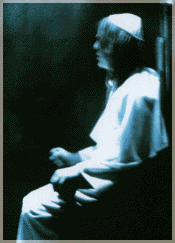
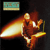
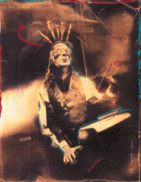
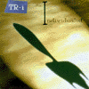

Todd Rundgren
has what most would consider an
unusual goal regarding his music career.
He wants to give his music away.
That's right. Make it available for anyone to download free. In a career that has spanned more than a
quarter-century, and featured such hits as "Hello, It's Me" and "I Saw the Light," Rundgren has sold a lot of
records. But he's never been quite comfortable with it. At various points, it appears as if he intentionally
submarined his own imminent rock stardom by following a commer-
cialy successful project with
something patently experimental.
"As far as my art goes, I'm trying to structure my life so that I can give it away," Rundgren says. "I don't feel comfortable charging people for it. I have pretenses to being a fine artist. The record industry is becoming too ridiculous. It has completely destroyed the concept of music as art. You don't qualify as a musician unless you sell records. Everyone who makes a record thinks, ÎThis has got to sell.' What is that doing to their art? They wouldn't do certain things unless it sold. I don't want that kind of paint on my personal expression." "I can produce records for money and have other means of income, but I want to make records just to make them. At this point, it is possible for me not to depend on record sales any longer. I want to deliver to anyone who's interested."
 Rundgren, a musician who has long danced on the leading edge of technology, embraced interactive music in the '90s. "I am the poster boy for interactivity," he says with a laugh. (He has even given himself a nom-de-disque: TR-i, for "Todd Rundgren Interactive.") In 1993, he was the first pop music artist to create and release an interactive CD-ROM. Titled No World Order, it allowed the user/listener to manipulate and deconstruct via computer the various sounds, textures and sequences throughout the disc. At the same time Rundgren wrote and recorded the music, he and assisting programmers were developing a test bed for the new technology. "My goal in No World Order was to probe the concept of interactive music," he explains. "It required me to think about the music in certain ways. The music had to be cut up so that it could be moved around. ÎWe have to keep these transitions clean. I can't put lyrics that overlap where the cuts might be.' After that, my objective was to get back to something more musical."
To that end, he released The Individualist last fall. A departure from the techno-ized, sometimes cold flavor of No World Order, the disc is something of a return to the pop melodies associated with his earlier work, although the tracks are largely synthesizer-driven. Instead of making it a fully interactive disc, he opted for CD-plus, a software format that works in conventional compact disc players, but when plugged into a CD-ROM offers additional graphic elements.
"This one's about music," Rundgren says. "I had to be able to service the traditional buying audience, but if you happen to have a computer and a ROM drive, you can put it in there and enhance the experience to some degree. There is some degree of interactivity. It adds another vector."
Todd Rundgren is not a 'net hog. There's simply not enough time. In fact, you could easily nickname him Backslash: songwriter/producer/voc-alist/instrumentalist/programmer/ graphic artist/consultant/poster boy. Rundgren does use the 'net for specific purposes, but to co-opt a line from Apocalypse Now, "Todd don't surf."
"I get in every once in awhile when I have something specific to look for," he says. "But I don't spend time there for personal enjoyment. Then I would be forced to stop trying to put meaning into things. Everything that happens to me is pregnant with meaning. I look at the Web as this kind of giant public domain CD-ROM, kind of like shareware but with a browser. A lot of the stuff on there is hack work that people just threw together. Some of them crash your machine. It's not well-supported or maintained. You may occasionally come upon extraordinary unsung works of one kind or another, but at this point the frantic commercialization of the Web is something of a disincentive to cruise. It's like a strip mall. There's all these hot buttons. It's like riding along a Dallas highway where there's nothing but fucking billboards. It's hard to find substantive content. And  it's obscured by blizzards of links, which attaches crap to crap." Despite his misgivings, Rundgren sees potential value in the Internet. He has signed on with CompuServe to create a new interactive music forum. The area is expected to go live on June 1 and will offer information about the emerging world of interactive music, as well as images, video clips, MIDI (Musical Instrumental Digital Interface) and sound files that members can manipulate to concoct their own blends of music and images. Members will also be able to contribute files and samples to produce collaborative efforts that span continents. "Our 'net presence will bypass the Web," Rundgren explains. "You'll use 'net protocol to get into our application. The flat world browsing thing will be for the strip mall crowd. We're setting up something more like a Neiman Marcus. It will be a place unto itself. If we do that, we can make sure the resources are provided. Our whole paradigm is that everyone loves the 'net, but the problem is the Web is based on print, a page format paradigm. Everything looks like a magazine or a catalogue, despite all the attempts to add plug-ins. The impression is you get this hydra-headed monster being burdened beyond its original design. It's like putting wings on a dog."
"In general, the Web is a good way of finding what's out there, but not a good way of presenting what's out there," he says.
"You'll be able to find us on the Web, you can FTP to us. We will create a visceral experience that you would expect out of local resources like CD-ROMs or television. People talk themselves into being intrigued by postage stamp-sized QuickTime movies. I just don't buy that. I don't enjoy it. I want something to fill the whole screen, have nice sound, good quality music, an immersive experience. And it will not be a sales- oriented thing."
Rundgren, 47, grew up in the suburbs of Philadelphia. After flirtations with garage bands and regional acts, he became the central figure in the Beatles-esque group, the Nazz. At 21, he signed with Warner Brothers as a solo artist. His initial project saw the then budding virtuoso sing, overlay instruments and engineer. The resulting LP, Runt, sold more than 100,000 copies, a fair showing. Word circulated within the music biz of his multifaceted musical and technical aplomb. The wunderkind engineered seminal albums by The Band. Rundgren reached his commercial zenith when he produced Meatloaf's 1977 smash Bat Out of Hell. He used the financial windfall to build his own $2 million video production facility.
 Along the way, Rundgren made a few classic albums of his own. The 1972 double album-set titled Something/ Anything? produced and performed by Rundgren alone is considered a classic. In '74, he formed the progressive power-pop group Utopia, foreshadowing the "new wave" scene that would happen a half- decade later.
Rundgren's resumé of technological firsts is impressive. In 1978, he performed both the first interactive television concert and the first live radio broadcast nationally by microwave, linking 40 cities around the country. The following year, he opened Utopia Video Studios. His first project, Gustav Holt's The Planets, was commissioned by RCA as the first demonstration software for its then-spanking new video-disc format. In 1980, Rundgren directed and produced Time Heals, the first video to combine live action and computer graphics. It became the second clip to be played on MTV. In 1981, he developed the first digital paint program for PCs, which he licensed to Apple. In '82, he performed the first live national cablecast of a rock concert via the USA Network. With his forays into interactivity, Rundgren looks to be a pivotal figure in how music is created and perceived in the not-too-distant future. He wants to help restore what he calls the "plasticity" of music. Before the onset of recording, he says, people sang drinking songs in pubs and would add new verses based on the events of the day.
He thinks some of pop music's pliant nature can be re-introduced via more sophisticated means. In an interview last year, he described a scenario whereby he could get up in the morning, work on a musical idea and upload it onto the 'net. If the next day he wanted to add a solo or change a troublesome note, he could tweak the music and upload again. "There are a number of ways to look at that issue," he says. "Do you allow people the window into the working process or do you deliver the finished product? Do you open lines for feedback? As an artist, I want the option to do it, although I don't necessarily have the proclivity to do it." He doesn't see the method being embraced by the pop community at large. "So many artists are concerned with creating an image of themselves, an image which is not necessarily accurate," he says. "They don't want their music deconstructed so people can find out truly about the artist. The ones who will be most uptight about having their music recontexturalized and examined are the ones with a basic self-consciousness about it. They might be found out. Perhaps their work is sloppy, or an obvious reflection of their influences; perhaps they're completely incapable of performing this under circumstances other than the recording studio."
One area where the interactive poster boy finds little interactivity is in the arena of pop concerts. Such a notion flies in the face of those technologically wary folk who view live performance as perhaps a last bastion of true artistic give-and-take.
 "Despite what you might hear otherwise, when acts go on the road, the specific objective is to go out and play the same set every night," he contends. "How long the guitar solo is is the only interactivity with most acts. Very few bands that I have seen would qualify as being interactive. Frank Zappa rehearsed his bands so thoroughly that, through a whole language of cues, he could jump from the chorus of one song to the vamp of another song on a dime."
His attitude is decidedly different. "When I took my band out last summer, we tried to keep some kind of interactive dynamic.
There was no song list. We never knew what song we were going to do until the last one was finished. I demanded that in order to keep everyone on their toes. So we rarely, if ever, played the same sequence of songs. It's not monumental in terms of interactivity, but at least it kept it interesting for me.
"It sure beats doing 50 shows glancing down at the same tattered set list. That was like the commute home. You've seen it all before, you zone out and endure it. Live performance outside of jazz is pretty much a rote experience. It's merely a re-telling and it seems essentially pointless." All told, Rundgren is an artist who holds himself to the highest standard of self-expression, who genuinely refuses to compromise his muse, whether it's playing guitar in front of a crowd, working at his computer for hours, or attempting to rap for the first time, as he did on No World Order. It takes courage. This most verbose of men finally sums up his philosophy in one pointed sentence: "Art to me is a public act of self-examination."